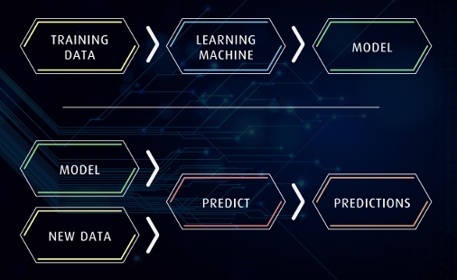

Auditing the COMPAS Recidivism Risk Assessment Tool
Predictive Modeling and Fairness in Machine Learning in CS1
Claire S. Lee, Jeremy Du, and Michael Guerzhoy
Overview
Applications of machine learning, and predictive modeling in particular, are now everywhere: machine learning models diagnose our illnesses; decide whether to extend credit to us; and decide whether to grant us bail. Consideration of algorithmic fairness are coming to the forefront. It is important that the predictive learning models that have an impact on so many people's lives aren't biased with respect to protected characteristics such as race or sex.
In the criminal justice system in the U.S., risk assessment tools (RATs) are increasingly being used to assess a criminal defendant’s probability of re-offending. RATs use information such as the number of priors as well as questionnaire data from defendants. In 2016, the non-profit journalism organization ProPublica analyzed COMPAS, a RAT made by Northpointe, Inc., to assess whether it was biased against African-American defendants. ProPublica found that COMPAS incorrectly labeled innocent African-American defendants as likely to reoffend twice as often as innocent white defendants. In technical terms, this means the false positive parity measure of algorithmic fairness was not satisfied by the COMPAS system.
In a follow-up to ProPublica's investigation, Julia Dressel and Hany Farid showed in an article in Science Advances (2018) that a score almost equivalent to the COMPAS score can be obtained by using only the defendant's sex, age, and their number of priors. Researchers in the algorithmic fairness community pointed out that the different observational measures of algorithmic fairness cannot in general all be simultaneously satisfied.
We present an assignment suitable for Introduction to Data Science and Introduction to Programming courses where students replicate the findings from ProPublica and Science Advances, and investigate a way to adjust the models they build to make it so that innocent African-American defendants are not mislabeled at a higher rate than innocent white defendants (with only a marginal impact on accuracy). We successfully used the assignment in a class that has no programming or statistics prerequisites.
We have two goals in mind: to reinforce students' understanding of predictive modeling and to teach them important CS1 concepts. It turns out that computing various measures of fairness for a predictive model and adjusting a model's thresholds to achieve a specified criterion of fairness involves programming tasks that are just at the right level of difficulty for mid-to-late CS1.
Predictive modeling is usually not taught in introductory courses. In part, this is because it is traditionally taught in courses that require knowledge of calculus. Another reason is the complexity of working with machine learning libraries, most of which require extensive computing experience.
We believe that predictive modeling and algorithmic fairness can be made accessible to all students. We teach predictive modeling with logistic regression early by treating logistic regression as a black box. For students who are learning Python and Java, we address the complexity of the commonly used machine learning libraries by creating a small number of wrapper functions that the students can use as black boxes. We supply drafts of tutorials covering the usage of those black boxes.
Meta Information
Summary
Students apply predictive modeling to build a model that predicts re-arrest of criminal defendants using real data. Students assess the algorithmic fairness of a real-world criminal risk assessment tool (RAT), and reproduce results from an impactful story in ProPublica and a 2018 Science Advances paper. Students explore different measures of algorithmic fairness, and adjust a model they build to satisfy the false positive parity measure.
Topics
| General Topics | Topics in R | Topics in Python | Topics in Java |
|---|---|---|---|
| Predictive modeling | Repeated computation with sapply | Lists/arrays and loops | Lists/arrays and loops |
| Performance measures in predictive modeling | Boolean operations on vectors | Nested arrays/lists | Nested arrays/lists |
| Algorithmic fairness and measures of algorithmic fairness | Working with existing classes | ||
| Lineplots and histograms |
Audience
- Introduction to Data Science or late CS1/early CS2
Difficulty
- Moderate difficulty for an R-based Introduction to Data Science class with no programming prerequisites.
- Likely more difficult than average for late CS1 in Python and Java.
Strengths
- We present an assignment on predictive modeling that is accessible to students very early in their computing careers, using real data.
- Computing various measures of algorithmic fairness and adjusting the thresholds of predictive models turns out to involve good CS1-level exercises.
- Students learn about algorithmic fairness.
- Students see and understand code for adjusting predictive models to satisfy false positive parity, a measure of algorithmic fairness.
- Students enjoy learning about a live issue. Students find it important to learn about the ethical implications of data science. Student feedback indicated students liked working with criminal justice data.
- In Python and Java, we provide a simplified "Learning Machine" API that should be accessible to beginners. Students need only to understand lists of lists/2D arrays, a few simple function calls, and our train/predict framework in order to work on the assignment. Students can use our API with their own datasets.
- Drafts of tutorials on predictive modeling that can be adapted for use in CS1 are provided.
Weaknesses
- While R has a built-in dataframe data type and a straightforward framework for training/predicting using linear models, Python and Java do not. We provide a simplified API for Python and Java, but some might argue it is overly simplistic. Students who want to work in Python will need to learn to use libraries like scikit-learn and Pandas later in their careers. Using our table data type in Java can be awkward.
- For CS1: we tried to minimize the amount of class time CS1 instructors would need to devote to the assignment if they choose to adopt it. However, a non-negligible amount of time in class would still need to be spent on introducing predictive modeling and measures of algorithmic fairness. Instructors will likely want to introduce exercises that would lead in to the assignment and have students use the API.
Variants
- We provide the assignment in R, as well as translations to Python and Java.
- Versions in Python and Java that use standard machine learning and dataframe libraries are possible, but would be more appropriate for more advanced students.
- Other datasets could be used in place of the COMPAS dataset. (Although we like to use the COMPAS because of its impact and importance — rarely would students in introductory courses get to work with a dataset that was subject to public discussion and scientific research so recently.)
Intro to Classifier Performance Measures and Observational Algorithmic Fairness Measures
Knowledge of the algorithmic fairness literature is not required to complete this assignment. We give a quick summary of what the students need to know. Links to further resources are provided.
Measures of Classifier Performance
We are considering a dataset where the output of interest is "positive"/"yes" (1) or "negative"/"no" (0). The outputs of our classifier are stored in the vector pred, and the correct outputs (i.e., the ground truth) are stored in the vector y. We can compute the following measures.
- Correct Classification Rate (CCR): for what proportion of the inputs does the correct output y[i] match the classifier output pred[i]? This can be computed in R using mean(y == pred).
- False Positive Rate (FPR): for what proportion of the inputs for which the correct output y[i] is negative is the classifier output pred[i] positive? This can be computed in R using sum((pred == 1) & (y == 0))/sum(y == 0).
- False Negative Rate (FNR): for what proportion of the inputs for which the correct output y[i] is positive is the classifier output pred[i] negative? This can be computed in R using sum((pred == 0) & (y == 1))/sum(y == 1).
A Few Observational Measures of Algorithmic Fairness
Algorithmic fairness can be assessed with respect to an input characteristic. Typically algorithmic fairness would be assessed with respect to characteristics such as race or sex.
- False positive parity with respect to characteristic C is satisfied if the false positive rate for inputs with C = 0 is the same as the false positive rate for inputs with C = 1. ProPublica found that false positive parity was not satisfied by classifiers based on the COMPAS score with respect to race. The false positive rate for African-American defendants (i.e., the percentage of innocent African-American defendants classified as likely to re-offend) was higher than for white defendants.
- False negative parity with respect to characteristic C is satisfied if the false negative rate for inputs with C = 0 is the same as the false negative rate for inputs with C = 1. For example, if “positive” means the person is deemed creditworthy, disparate false negative rates imply different levels of access to credit for people who would not actually default.
- Accuracy parity with respect to characteristic C is satisfied if accuracy for inputs with C = 0 is the same as the accuracy for inputs with C = 1.
It is fairly easy to show that in general, only one measure at a time can be satisfied for any particular classifier. We refer interested readers to the resources below for details.
Introduction to Data Science and Programming in R
We used the assignment presented here (in R) in an Introduction to Data Science class that has no computing prerequisites. Any practitioner of data science needs to be able to program, and this assignment was designed to help students learn to program. In particular, we reinforce the use of dplyr for processing dataframes and of sapply for repeated computation that is not naturally done on dataframes.
Because we emphasize programming for beginners, we teach a restricted set of R. Experienced R users might find our style not as concise as it could have been.
Python and Data Science Programming
Python is the most commonly-used language in data science. However, we find that the most commonly used libraries — scikit-learn and Pandas — are not beginner friendly. CS1 courses would struggle to explain the details of those libraries to students. For that reason, we provide a simplified API students can use. Some instructors will choose to use NumPy, making the code for this assignment more concise. We chose to avoid NumPy as well to reduce the amount of dependencies.
We find that for many of the tasks required for this assignment, Python (without NumPy) would be more wordy and less natural. As a simple illustration, in R, we would compute the false negative rate for binary classifier outputs pred and expected outputs y as
sum((pred == 0) & (y == 1))/sum(y == 1)
Python without NumPy is much wordier. Nevertheless, we think that the tasks in this assignment are representative of good Python exercises for nested lists and loops.
Java and Data Science Programming
Java (without additional libraries) is not considered to be as well-suited for data science programming as R or Python. Operating on Java arrays is more awkward than operating on Python lists or R vectors. Fixed array lengths, and the lack of vectorization make life more difficult (but of course have their advantages). Data science programming naturally lends itself to writing scripts that run in notebooks (we use Jupyter Notebook for Python and R Markdown for R); such a style is basically impossible in Java: students instead write a program that outputs all the numbers they need.
The challenges encountered when doing this assignment in Java are in many ways similar to the challenges encountered when doing scientific computing in Java in CS1. The goal of reinforcing basic programming skills while learning data science would still be achieved.
Our API is meant to address some of those difficulties. Nevertheless, the assignment is more difficult to do in Java than in R or Python.
The Learning Machine API
For the Python and Java versions of the assignment, we encapsulate logistic regression in a learningmachine module/LearningMachine class. The idea is to let CS1 students concentrate on programming and to quickly grasp the idea of a black box that takes in a training set and spits out a model that can make predictions for new data. We hope that avoiding the need to spend several lectures on properly teaching subsets of scikit-learn or Weka will enable CS1 instructors to teach predictive modeling in their course.
Recommended Resources
- Arvind Narayanan, 21 Fairness Definitions and Their Politics (video tutorial)
- Julia Angwin, Jeff Larson, Surya Mattu and Lauren Kirchner, Machine Bias (the ProPublica investigation)
- Julia Dressel and Hany Farid, The Accuracy, Fairness, and Limits of Predicting Recidivism (a very accessible and important article in Science Advances, 2018)
- Sam Corbett-Davies, Emma Pierson, Avi Feller and Sharad Goel, Can an Algorithm be Racist (a post on the Washington Post website explaining the issues that arise with using false positive parity as a measure of algorithmic fairness)
Discussing Algorithmic Fairness in Class
Our goal is to make students aware of some of the issues around algorithmic fairness. Algorithmic fairness goes beyond the simple observational measures that the students compute in this assignment, and whole courses can be devoted to it. It is important that students understand that algorithmic fairness is not a mere matter of not using sensitive characteristics such as sex or race as inputs to predictive models, nor is it just a matter of measuring disparities in false positive and false negatives.
In the assignment, we ask the students to adjust the models in order to achieve false positive parity. This demonstrates one way to address some of the issues that arise. However, the assignment should serve as a starting point for a discussion.
Assignment Handout
Assignment Solutions
Solutions will be made available to instructors who use the assignment.
| Solutions in R | Solutions in Python (translation) | Solutions in Java (translation) |
|---|---|---|
| HTML report | HTML report | Solution.java |
| Rmd source | Jupyter Notebook source | LearningMachineSolution.java (required jar files) |
Please consult the Python and Java tutorial notes below and download the accompanying Java classes.
Tutorials
| Python tutorial | Java tutorial and packages |
|---|---|
| Python tutorial (HTML) | PDF tutorial (source) |
| ipynb source | LearningMachine.java |
| learningmachine module | Data.java |
| ICU data | Plot.java |
| LearningMachine.png, Train_Valid_Test.png, Predict.png | Required jar files |